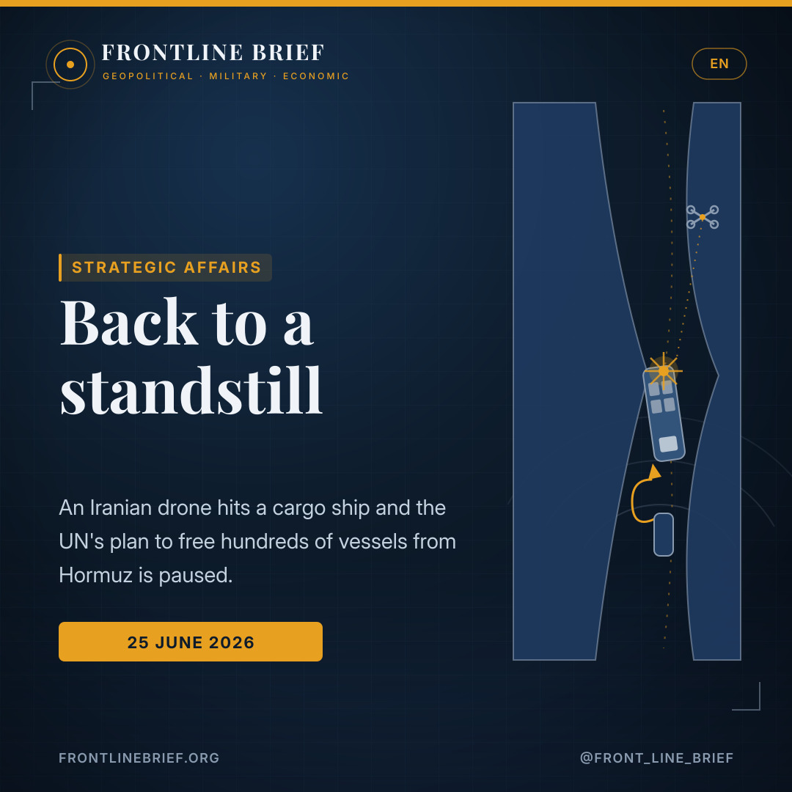
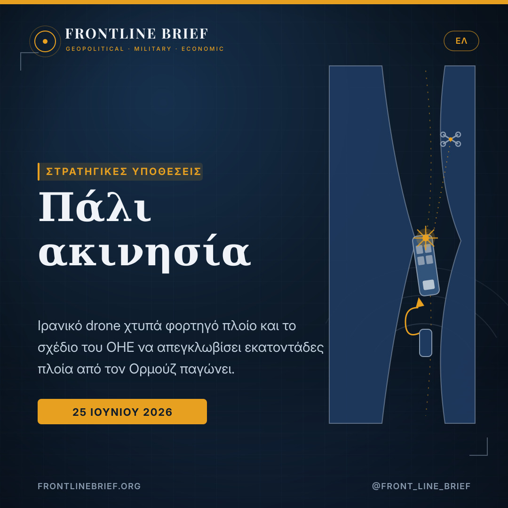
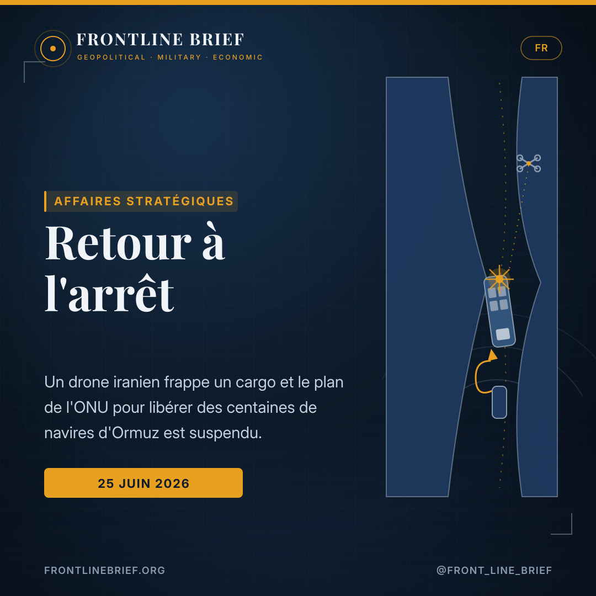
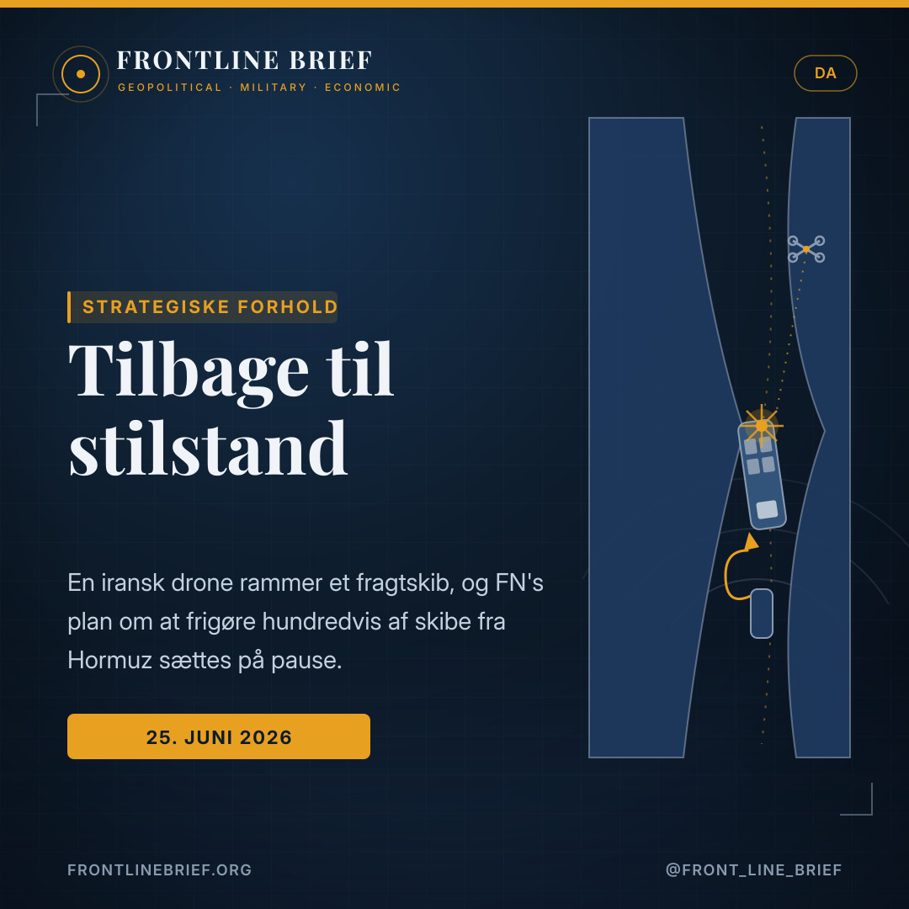
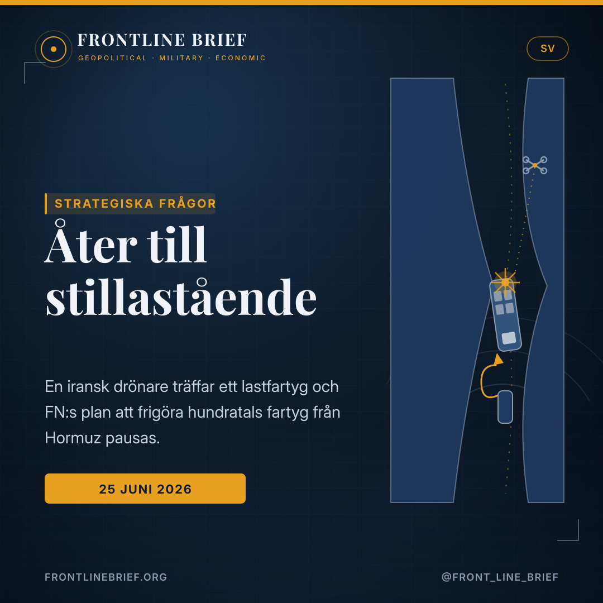

Back to a standstill: an Iranian drone strike halts the plan to free ships from Hormuz
Just as traffic was beginning to flow again, an Iranian drone hit a cargo ship near the Strait of Hormuz — and the UN's maritime body paused its plan to evacuate hundreds of vessels still trapped in the Persian Gulf. The strike, and a new round of Revolutionary Guard warnings, undid days of fragile normalisation.





A cargo ship hit
A US official and Iranian officials say an Iranian drone struck the Singapore-flagged cargo ship Ever Lovely about 7.5 nautical miles south-east of Dahit, Oman. The UKMTO reported damage to the bridge from a projectile on the starboard side, with no casualties and no environmental impact.
Evacuation on hold
The UN's IMO paused its plan, built with Oman, to give safe passage out of the Gulf to stranded ships. SecGen Arsenio Dominguez said it would hold until safety guarantees could be reconfirmed — on the Day of the Seafarer — even though the struck ship was not in the evacuation framework.
Routes redrawn
The IRGC Navy said safe passage was limited to routes it designates, calling others dangerous, and claimed it turned ships back on the Omani southern route — the one operators had believed free of Iranian control. Analysts call it a reversal of the normalisation since the MoU.
A strike on the Day of the Seafarer
For a few days, the Strait of Hormuz had looked as if it was reopening. Then, on Thursday, an Iranian drone struck a cargo ship in the Gulf of Oman, and the careful choreography of normalisation stalled. A US official, and Iranian officials, attributed the attack to an Iranian drone; a maritime-security source identified the vessel as the Ever Lovely, a Singapore-flagged cargo ship, hit about 7.5 nautical miles south-east of Dahit, Oman. The United Kingdom Maritime Trade Operations centre reported a projectile striking the starboard side and damaging the bridge, with no casualties and no environmental impact.
The IMO presses pause
The response from the UN's International Maritime Organization was swift. The body had been running an evacuation plan, devised with Oman, to give safe passage out of the Persian Gulf to hundreds of vessels still unable to transit the largely closed Strait. Secretary-General Arsenio Dominguez announced he was temporarily pausing it to reconfirm that the necessary safety guarantees remained in place — pointedly noting that the day was the Day of the Seafarer, and that thousands of stranded crews should not become collateral victims of the conflict. The struck ship, he stressed, had not been moving under the evacuation framework.
The routes, redrawn
The pause followed a hardening on the water. The Islamic Revolutionary Guard Corps Navy warned that safe passage was limited to routes Tehran designates, branding others "unacceptable and completely dangerous," and claimed to have turned back several ships using the southern corridor along the Omani coast. That route — clear of mines and the one the IMO preferred — had been thought free of Iranian control. A separate northern route hugs the Iranian coastline; mines are still feared down the central channel.
The one lane operators believed was free of Iranian control is now the one Iran says it controls.
A reversal in the making
The numbers had been moving the other way. After last week's memorandum between Washington and Tehran, crossings had climbed — by one tracker, 70 on 24 June, more than double the day before, as demining advanced and operators leaned on the Omani route. The maritime-intelligence firm Windward called the Guards' new stance a reversal of that normalisation: it identified five vessels behaving as if ordered to turn back, with a sixth losing its tracking signal, and noted a radio broadcast warning that ships transiting without permission did so at their own risk.
Who is really in charge
Beneath the incident sits a harder question: who actually controls the waterway. The IMO had framed its plan as a cooperative effort involving Iran, Oman, the United States and the shipping industry — yet the Guards appear to be acting on their own line, and reported frictions between the IRGC and Iran's government make it difficult to say where the final word lies. For Europe's shipping-dependent economies, and for a Greek-owned fleet that moves a large share of the world's seaborne trade, the lesson of the week is sobering: a single drone and a single broadcast were enough to turn a tentative reopening back into a standstill.
Ένα πλήγμα την Ημέρα του Ναυτικού
Για λίγες ημέρες, τα Στενά του Ορμούζ έμοιαζαν να επαναλειτουργούν. Έπειτα, την Πέμπτη, ένα ιρανικό drone χτύπησε φορτηγό πλοίο στον Κόλπο του Ομάν, και η προσεκτική χορογραφία της ομαλοποίησης κόλλησε. Αμερικανός αξιωματούχος, αλλά και Ιρανοί αξιωματούχοι, απέδωσαν την επίθεση σε ιρανικό drone· πηγή ναυτιλιακής ασφάλειας ταυτοποίησε το πλοίο ως το Ever Lovely, φορτηγό υπό σημαία Σιγκαπούρης, που χτυπήθηκε περίπου 7,5 ναυτικά μίλια νοτιοανατολικά του Ντάχιτ του Ομάν. Το βρετανικό κέντρο UKMTO ανέφερε βλήμα που έπληξε τη δεξιά πλευρά και προκάλεσε ζημιά στη γέφυρα, χωρίς θύματα και χωρίς περιβαλλοντικές επιπτώσεις.
Ο IMO πατά παύση
Η αντίδραση του Διεθνούς Ναυτιλιακού Οργανισμού του ΟΗΕ ήταν άμεση. Ο οργανισμός έτρεχε ένα σχέδιο εκκένωσης, σχεδιασμένο με το Ομάν, για να δώσει ασφαλή δίοδο εξόδου από τον Περσικό Κόλπο σε εκατοντάδες πλοία που αδυνατούν ακόμη να διασχίσουν τα σε μεγάλο βαθμό κλειστά Στενά. Ο γενικός γραμματέας Αρσένιο Δομίνγκες ανακοίνωσε ότι το αναστέλλει προσωρινά για να επιβεβαιώσει εκ νέου ότι παραμένουν σε ισχύ οι αναγκαίες εγγυήσεις ασφαλείας — επισημαίνοντας ότι η ημέρα ήταν η Ημέρα του Ναυτικού, και ότι χιλιάδες εγκλωβισμένα πληρώματα δεν πρέπει να γίνουν παράπλευρα θύματα της σύγκρουσης. Το πλοίο που χτυπήθηκε, τόνισε, δεν κινούνταν στο πλαίσιο της εκκένωσης.
Οι διαδρομές, ξαναχαραγμένες
Η παύση ακολούθησε μια σκλήρυνση στη θάλασσα. Το Ναυτικό των Φρουρών της Επανάστασης προειδοποίησε ότι η ασφαλής δίοδος περιορίζεται στις διαδρομές που ορίζει η Τεχεράνη, χαρακτηρίζοντας τις άλλες «απαράδεκτες και εντελώς επικίνδυνες», και ισχυρίστηκε ότι γύρισε πίσω αρκετά πλοία που χρησιμοποιούσαν τον νότιο διάδρομο κατά μήκος των ακτών του Ομάν. Εκείνη η διαδρομή — καθαρή από νάρκες και η προτιμώμενη από τον IMO — θεωρούνταν ελεύθερη ιρανικού ελέγχου. Μια χωριστή βόρεια διαδρομή ακολουθεί την ιρανική ακτογραμμή· νάρκες εξακολουθούν να φοβίζουν στο κεντρικό κανάλι.
Η μόνη διαδρομή που οι πλοιοκτήτες θεωρούσαν ελεύθερη ιρανικού ελέγχου είναι πλέον αυτή που το Ιράν λέει πως ελέγχει.
Μια ανατροπή που χτίζεται
Οι αριθμοί κινούνταν προς την αντίθετη κατεύθυνση. Μετά το πρωτόκολλο της προηγούμενης εβδομάδας ανάμεσα σε Ουάσιγκτον και Τεχεράνη, οι διελεύσεις είχαν αυξηθεί — κατά μία καταγραφή, 70 στις 24 Ιουνίου, περισσότερες από διπλάσιες σε σχέση με την προηγουμένη, καθώς η ναρκαλιευτική προχωρούσε και οι πλοιοκτήτες στηρίζονταν στη διαδρομή του Ομάν. Η εταιρεία ναυτιλιακών πληροφοριών Windward χαρακτήρισε τη νέα στάση των Φρουρών ανατροπή αυτής της ομαλοποίησης: εντόπισε πέντε πλοία που συμπεριφέρονταν σαν να είχαν διαταχθεί να γυρίσουν πίσω, με ένα έκτο να χάνει το σήμα εντοπισμού, και σημείωσε ραδιοφωνική προειδοποίηση ότι όσα πλοία διέρχονται χωρίς άδεια το κάνουν με δική τους ευθύνη.
Ποιος ορίζει πραγματικά
Κάτω από το περιστατικό κρύβεται ένα πιο σκληρό ερώτημα: ποιος ελέγχει στ' αλήθεια το πέρασμα. Ο IMO είχε παρουσιάσει το σχέδιό του ως συνεργατική προσπάθεια με Ιράν, Ομάν, ΗΠΑ και τη ναυτιλιακή βιομηχανία — όμως οι Φρουροί φαίνεται να ακολουθούν δική τους γραμμή, και οι αναφερόμενες τριβές ανάμεσα στους IRGC και την ιρανική κυβέρνηση δυσκολεύουν να πει κανείς πού βρίσκεται ο τελικός λόγος. Για τις εξαρτημένες από τη ναυτιλία ευρωπαϊκές οικονομίες, και για έναν ελληνόκτητο στόλο που μετακινεί μεγάλο μέρος του παγκόσμιου θαλάσσιου εμπορίου, το μάθημα της εβδομάδας είναι νηφάλιο: ένα μόνο drone και μία μόνο ραδιοφωνική προειδοποίηση αρκούσαν για να μετατρέψουν μια διστακτική επαναλειτουργία ξανά σε ακινησία.
Une frappe le Jour du Marin
Pendant quelques jours, le détroit d'Ormuz avait semblé rouvrir. Puis, jeudi, un drone iranien a frappé un cargo dans le golfe d'Oman, et la chorégraphie prudente de la normalisation s'est enrayée. Un responsable américain, ainsi que des responsables iraniens, ont attribué l'attaque à un drone iranien ; une source de sécurité maritime a identifié le navire comme l'Ever Lovely, un cargo sous pavillon singapourien, touché à environ 7,5 milles nautiques au sud-est de Dahit, à Oman. Le centre britannique UKMTO a fait état d'un projectile ayant frappé le côté tribord et endommagé la passerelle, sans victimes ni impact environnemental.
L'OMI appuie sur pause
La réaction de l'Organisation maritime internationale de l'ONU a été rapide. L'organisation menait un plan d'évacuation, conçu avec Oman, pour offrir une sortie sûre du golfe Persique à des centaines de navires encore incapables de traverser le détroit en grande partie fermé. Le secrétaire général Arsenio Dominguez a annoncé sa suspension temporaire afin de reconfirmer le maintien des garanties de sécurité nécessaires — soulignant que la journée était le Jour du Marin, et que des milliers d'équipages bloqués ne devaient pas devenir des victimes collatérales du conflit. Le navire touché, a-t-il insisté, ne naviguait pas dans le cadre de l'évacuation.
Les routes, redessinées
La pause a suivi un durcissement en mer. La marine des Gardiens de la révolution a averti que le passage sûr se limitait aux routes désignées par Téhéran, qualifiant les autres d'« inacceptables et totalement dangereuses », et a affirmé avoir fait demi-tour à plusieurs navires empruntant le corridor sud le long de la côte omanaise. Cette route — exempte de mines et préférée par l'OMI — était jugée libre de tout contrôle iranien. Une route nord distincte longe la côte iranienne ; des mines restent redoutées dans le chenal central.
La seule voie que les armateurs croyaient libre de contrôle iranien est désormais celle que l'Iran dit contrôler.
Un renversement en cours
Les chiffres allaient dans l'autre sens. Après le protocole de la semaine dernière entre Washington et Téhéran, les passages avaient grimpé — selon un observateur, 70 le 24 juin, plus du double de la veille, à mesure que le déminage avançait et que les opérateurs s'appuyaient sur la route omanaise. La société de renseignement maritime Windward a qualifié la nouvelle posture des Gardiens de renversement de cette normalisation : elle a repéré cinq navires se comportant comme s'ils avaient reçu l'ordre de faire demi-tour, un sixième perdant son signal, et noté un message radio avertissant que tout navire transitant sans autorisation le faisait à ses risques.
Qui commande vraiment
Sous l'incident se cache une question plus dure : qui contrôle réellement la voie d'eau. L'OMI avait présenté son plan comme un effort coopératif associant l'Iran, Oman, les États-Unis et l'industrie du transport maritime — mais les Gardiens semblent suivre leur propre ligne, et les frictions rapportées entre le CGRI et le gouvernement iranien rendent difficile de dire où se trouve le dernier mot. Pour les économies européennes dépendantes du transport maritime, et pour une flotte sous contrôle grec qui déplace une large part du commerce mondial, la leçon de la semaine est sobre : un seul drone et un seul message radio ont suffi à transformer une réouverture hésitante en un nouvel arrêt.
Et angreb på Søfarerens Dag
I nogle dage havde Hormuzstrædet set ud, som om det åbnede igen. Så, torsdag, ramte en iransk drone et fragtskib i Omanbugten, og normaliseringens forsigtige koreografi gik i stå. En amerikansk embedsmand, og iranske embedsmænd, tilskrev angrebet en iransk drone; en kilde inden for maritim sikkerhed identificerede skibet som Ever Lovely, et fragtskib under Singapore-flag, ramt cirka 7,5 sømil sydøst for Dahit i Oman. Det britiske UKMTO-center rapporterede et projektil, der ramte styrbordssiden og beskadigede broen, uden ofre og uden miljøpåvirkning.
IMO trykker på pause
Reaktionen fra FN's Internationale Søfartsorganisation kom hurtigt. Organisationen havde kørt en evakueringsplan, udtænkt med Oman, for at give sikker udsejling fra Den Persiske Golf til hundredvis af skibe, der stadig ikke kan passere det stort set lukkede stræde. Generalsekretær Arsenio Dominguez meddelte, at han midlertidigt satte den på pause for at bekræfte, at de nødvendige sikkerhedsgarantier fortsat var på plads — med en pointe om, at dagen var Søfarerens Dag, og at tusindvis af strandede besætninger ikke måtte blive utilsigtede ofre i konflikten. Det ramte skib, understregede han, sejlede ikke under evakueringsrammen.
Ruterne, gentegnet
Pausen fulgte en hærdning til søs. Revolutionsgardens flåde advarede om, at sikker passage var begrænset til ruter, Teheran udpeger, og kaldte andre «uacceptable og fuldstændig farlige», og hævdede at have vendt flere skibe, der brugte den sydlige korridor langs Omans kyst. Den rute — fri for miner og foretrukket af IMO — blev anset for fri for iransk kontrol. En separat nordlig rute følger den iranske kystlinje; miner frygtes stadig i den centrale kanal.
Den eneste bane, redere troede var fri for iransk kontrol, er nu den, Iran siger, det kontrollerer.
En vending under opsejling
Tallene bevægede sig den anden vej. Efter sidste uges memorandum mellem Washington og Teheran var passagerne steget — ifølge én optælling 70 den 24. juni, mere end det dobbelte af dagen før, efterhånden som minerydningen skred frem, og operatørerne lænede sig op ad Oman-ruten. Det maritime efterretningsfirma Windward kaldte Gardens nye holdning en vending af den normalisering: det identificerede fem skibe, der opførte sig, som om de var beordret tilbage, med et sjette, der mistede sit sporingssignal, og noterede en radioudsendelse, der advarede om, at skibe, der sejler uden tilladelse, gør det på egen risiko.
Hvem bestemmer egentlig
Under hændelsen ligger et hårdere spørgsmål: hvem der faktisk kontrollerer farvandet. IMO havde præsenteret sin plan som en samarbejdsindsats med Iran, Oman, USA og shippingbranchen — men Garden synes at følge sin egen linje, og rapporterede gnidninger mellem IRGC og Irans regering gør det svært at sige, hvor det sidste ord ligger. For Europas shippingafhængige økonomier, og for en græskejet flåde, der flytter en stor del af verdens søbårne handel, er ugens lektie nøgtern: en enkelt drone og en enkelt radioudsendelse var nok til at vende en spæd genåbning tilbage til stilstand.
Ett angrepp på Sjöfararens dag
I några dagar hade Hormuzsundet sett ut att öppna igen. Sedan, på torsdagen, träffade en iransk drönare ett lastfartyg i Omanviken, och normaliseringens försiktiga koreografi stannade av. En amerikansk tjänsteman, och iranska tjänstemän, tillskrev attacken en iransk drönare; en källa inom sjösäkerhet identifierade fartyget som Ever Lovely, ett lastfartyg under Singapore-flagg, träffat omkring 7,5 sjömil sydost om Dahit i Oman. Det brittiska UKMTO-centret rapporterade en projektil som träffade styrbordssidan och skadade bryggan, utan offer och utan miljöpåverkan.
IMO trycker på paus
Reaktionen från FN:s Internationella sjöfartsorganisation kom snabbt. Organisationen drev en evakueringsplan, utformad med Oman, för att ge säker utfart ur Persiska viken till hundratals fartyg som fortfarande inte kan passera det till stor del stängda sundet. Generalsekreterare Arsenio Dominguez meddelade att han tillfälligt pausar den för att på nytt bekräfta att de nödvändiga säkerhetsgarantierna fortfarande gäller — med en poäng om att dagen var Sjöfararens dag, och att tusentals strandsatta besättningar inte fick bli kollateralt drabbade i konflikten. Det träffade fartyget, betonade han, seglade inte inom evakueringsramen.
Rutterna, omritade
Pausen följde på en hårdnande hållning till sjöss. Revolutionsgardets flotta varnade för att säker passage var begränsad till rutter som Teheran utser, och kallade andra «oacceptabla och fullständigt farliga», och påstod sig ha vänt tillbaka flera fartyg som använde den södra korridoren längs Omans kust. Den rutten — fri från minor och föredragen av IMO — ansågs fri från iransk kontroll. En separat nordlig rutt följer den iranska kustlinjen; minor fruktas alltjämt i den centrala kanalen.
Den enda led redarna trodde var fri från iransk kontroll är nu den Iran säger sig kontrollera.
En vändning på väg
Siffrorna rörde sig åt andra hållet. Efter förra veckans avtal mellan Washington och Teheran hade passagerna stigit — enligt en räkning 70 den 24 juni, mer än dubbelt så många som dagen innan, allteftersom minröjningen fortskred och operatörerna lutade sig mot Oman-rutten. Det maritima underrättelseföretaget Windward kallade Gardets nya hållning en vändning av den normaliseringen: det identifierade fem fartyg som betedde sig som om de beordrats att vända, med ett sjätte som tappade sin spårningssignal, och noterade en radiosändning som varnade för att fartyg som passerar utan tillstånd gör det på egen risk.
Vem bestämmer egentligen
Under händelsen ligger en svårare fråga: vem som faktiskt kontrollerar farvattnet. IMO hade presenterat sin plan som en samarbetsinsats med Iran, Oman, USA och sjöfartsnäringen — men Gardet tycks följa sin egen linje, och rapporterade slitningar mellan IRGC och Irans regering gör det svårt att säga var det sista ordet ligger. För Europas sjöfartsberoende ekonomier, och för en grekägd flotta som flyttar en stor del av världens sjöburna handel, är veckans läxa nykter: en enda drönare och en enda radiosändning räckte för att vända en trevande återöppning tillbaka till stillastående.
Sources
- The War Zone (TWZ) — Plan To Move Ships Through Strait Of Hormuz Paused After Iran Strikes Cargo Vessel (Howard Altman, 25 June 2026)
- IMO Secretary-General Arsenio Dominguez statement; UKMTO Warning 074-26; Windward and Kpler maritime data; Washington Post (IRGC-N routes)
- Frontline Brief background — the US–Iran MoU, the Oman southern corridor, and mine-clearance in the Strait